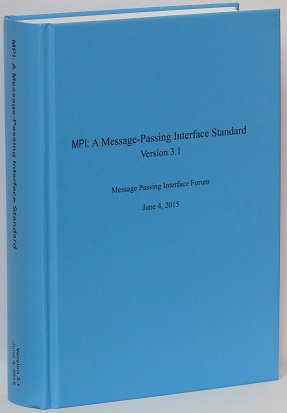
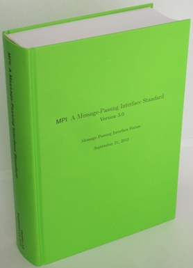
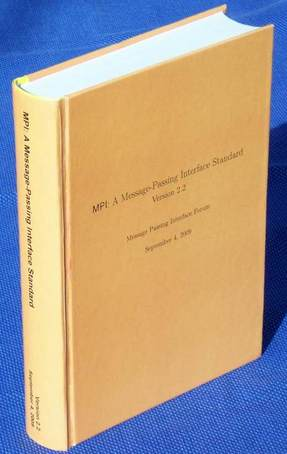
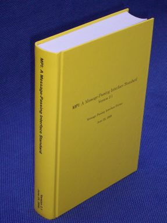

<!DOCTYPE html>
<html lang=en>
<head>
<meta charset="utf-8">
<meta http-equiv="Content-Style-Type" content="text/css">
<title>MPI Documents</title>
<style type="text/css">
<!--
h1 { text-align:center }
-->
</style>
</head>
<body bgcolor="FFFFFF"></body>
</html>
<p><basefont size="4" /></p>

<h1>MPI Documents</h1>

<p>The official version of the MPI documents are the English Postscript versions (for MPI 1.0 and 1.1) and PDF (for the other versions). In several cases, a translation or HTML version is also available for convenience. The HTML version was made with automated tools. In case of a difference between these two sources, the Postscript or PDF version of MPI standard documents are always considered the official version. In the case of multiple PDF versions, only the one described as the &quot;MPI x.y document as PDF&quot; is the official version; the versions provided with alternate formatting are provided as a convenience and are not official (every effort has been taken to make them &quot;the same&quot;, but no guarantee is made).</p>

<p>Those who prefer to get the documents via anonymous ftp may do so at ftp.mpi-forum.org in pub/docs/.</p>

<p>Some <a href="translations.html">translations of MPI documents</a> are available.</p>

<h2>MPI-3.1</h2>

<p>MPI-3.1 was approved by the MPI Forum on June 4, 2015.</p>

<ul>
<li><a href="mpi-3.1/mpi31-report.pdf">MPI 3.1 document as PDF</a></li>
<li><a href="mpi3.1index.htm">Index into MPI 3.1 document</a>; this page is experimental</li>
<li><a href="mpi-3.1/index.htm">Versions of MPI 3.1 with alternate formatting</a></li>
<li><a href="mpi-3.1/errata-31.pdf">Errata for MPI 3.1</a></li>
<li><a href="mpi-3.1/mpi31-report/mpi31-report.htm">Unofficial HTML version of MPI 3.1</a>.  This version was produced with tohtml.
</ul>

<table border="0" cellpadding="4" cellspacing="1">
	<tbody>
		<tr>
			<td valign="BOTTOM"><a href="images/mpi-report-3.1-2015-06-04-as-1book.jpg"></a></td>
			<td valign="BOTTOM">The complete, official MPI-3.1 Standard (June 2015) is available in one book (hardcover, 868 pages, sewn binding).<br/>
For all MPI programmers, the standard can be used as a complete MPI reference manual with many examples and advices to users. 
With MPI-3.1, a general index was added that supplements the other indices.<br/> 
It was printed and is sold at cost by HLRS; see <a href="http://www.hlrs.de/mpi/mpi31/">http://www.hlrs.de/mpi/mpi31/</a> .</td>
		</tr>
	</tbody>
</table>
<h2>Previous Versions of the MPI Standard</h2>

<h3>MPI-3.0</h3>

<p>MPI-3.0 was approved by the MPI Forum on September 21, 2012.</p>

<ul>
<li><a href="mpi-3.0/mpi30-report.pdf">MPI 3.0 document as PDF</a></li>
<li><a href="mpi-3.0/index.htm">Versions of MPI 3.0 with alternate formatting</a></li>
<li><a href="mpi-3.0/errata-30.pdf">Errata for MPI 3.0</a></li>
</ul>

<table border="0" cellpadding="4" cellspacing="1">
	<tbody>
		<tr>
			<td valign="BOTTOM"><a href="images/mpi-report-3.0-2012-09-21-as-1book.jpg"></a></td>
			<td valign="BOTTOM">The complete, official MPI-3.0 Standard (September 2012) will be available <b>in one book</b> (hardcover, 852 pages, sewn binding).<br />
			For all MPI programmers, the standard can be used as a complete MPI <b>reference manual</b> with many <b>examples</b> and <b>advices to users</b>. The last 17 pages contain several <b>indices</b> to allow quick location of all relevant information.<br />
			It was printed and is <b>sold at cost by HLRS</b>, see <a href="http://www.hlrs.de/mpi/mpi30/"><b>http://www.hlrs.de/mpi/mpi30/ </b></a></td>
		</tr>
	</tbody>
</table>

<h3>MPI-2.2</h3>

<p>MPI-2.2 was approved by the MPI Forum on September 4, 2009.</p>

<ul>
<li><a href="mpi-2.2/mpi22-report.pdf">MPI 2.2 document as PDF</a></li>
<li><a href="mpi-2.2/index.htm">Versions of MPI 2.2 with alternate formatting</a></li>
<li><a href="mpi-2.2/mpi22-report/mpi22-report.htm">Unofficial HTML version of MPI 2.2</a>. This version was produced with tohtml; Latex2html was unable to handle the document.</li>
<li><a href="mpi-2.2/errata-22.pdf">Errata for MPI 2.2</a></li>
</ul>

<table border="0" cellpadding="4" cellspacing="1">
	<tbody>
		<tr>
			<td valign="BOTTOM"><a href="images/mpi-report-2.2-2009-09-04-as-1book.jpg"></a></td>
			<td valign="BOTTOM">The complete, official MPI-2.2 Standard (September 2009) is now available <b> in one book</b> (hardcover, 647 pages, sewn binding).<br />
			For all MPI programmers, the standard can be used as a complete MPI <b>reference manual</b> with many <b>examples</b> and <b>advices to users</b>. The last 19 pages contain several <b>indices</b> to allow quick location of all relevant information.<br />
			It was printed and is <b>sold at cost by HLRS</b>, see <a href="http://www.hlrs.de/mpi/mpi22/"><b>http://www.hlrs.de/mpi/mpi22/ </b></a></td>
		</tr>
	</tbody>
</table>

<h2>MPI-2.1</h2>

<p>MPI-2.1 was approved by the MPI Forum on September 4, 2008 with the second and final official vote.</p>

<ul>
<li><a href="mpi-2.1/mpi21-report.pdf">MPI 2.1 document as PDF</a></li>
<li><a href="mpi-2.1/mpi-2-1-doc.htm">Versions of MPI 2.1 with alternate formatting</a></li>
<li><a href="mpi-2.1/mpi21-report-bw/mpi21-report-bw.htm">Unofficial HTML version of MPI 2.1</a>. This version was produced with tohtml; Latex2html was unable to handle the document.</li>
<li><a href="mpi-2.1/mpi-2.1-merge-errata-v2.pdf">Partial list of MPI-2.1 errata (items introduced by merging MPI 1.2 and MPI 2.0)</a></li>
</ul>

<table border="0" cellpadding="4" cellspacing="1">
	<tbody>
		<tr>
			<td valign="BOTTOM"><a href="images/mpi-report-2.1-2008-06-23-as-1book.jpg"></a></td>
			<td valign="BOTTOM">The complete, official MPI-2.1 Standard (June 2008) is now available <b>in one book</b> (hardcover, 608 pages, sewn binding).<br />
			For all MPI programmer, the standard can be used as a complete MPI <b>reference manual</b> with many <b>examples</b> and <b>advices to users</b>. The last 16 pages contain several <b>indexes</b> to allow quick finding of all relevant information.<br />
			It was printed and is <b>sold at cost by HLRS</b>, see <a href="http://www.hlrs.de/mpi/mpi21/"><b>http://www.hlrs.de/mpi/mpi21/</b></a></td>
		</tr>
	</tbody>
</table>

<h3>MPI-2.0</h3>

<ul>
<li>MPI-2.0 document in <a href="mpi-2.0/mpi-20.ps.Z">compressed postscript</a>, <a href="mpi-2.0/mpi-20.ps">postscript</a>, or <a href="mpi-2.0/mpi2-report.pdf">PDF (unofficial version)</a>.</li>
<li>Original MPI-2.0 errata in <a href="mpi-2.0/errata-20.ps.Z">compressed postscript</a> or <a href="mpi-2.0/errata-20.ps">postscript</a> (last modified 20 May 1998)</li>
<li>Updated MPI-2.0 errata as voted on by the MPI Forum. Available in <a href="mpi-2.0/errata-20-2.ps">Postscript</a>, <a href="mpi-2.0/errata-20-2.pdf">PDF</a>, and (unofficially) <a href="mpi-2.0/errata-20-2.html">HTML</a>.</li>
<li><a href="mpi-2.0/mpi-20-html/mpi2-report.html">MPI-2.0 document</a> in HTML</li>
<li><a href="mpi-2.0/mpi-20-dvi.tar.Z">compressed tar file</a> or <a href="mpi-2.0/mpi-20-dvi.tar">tar file</a> of the dvi files and figures needed to create the MPI-2.0 document. Intended for those who need to create special output for their printing device.</li>
</ul>

<h3>MPI-1.3</h3>

<p>MPI-1.3 was approved by the MPI Forum on July 1, 2008 with the first official vote. The second official (and final) vote is expected on September 4, 2008.</p>

<ul>
<li><a href="mpi-1.3/mpi-report-1.3-2008-05-30.pdf">MPI 1.3 as PDF</a></li>
<li><a href="mpi-1.3/mpi-report-1.3-2008-05-30.ps">MPI 1.3 as Postscript</a></li>
</ul>

<p>The document MPI-1.3 was released as final end of the MPI-1 series. It was developed for technical and historical reasons in the framework of the development of MPI-2.1. It does not introduce a new (version, subversion) number.</p>

<h3>MPI-1.2</h3>

<p>The MPI-1.2 document is contained in the the MPI-2 document.</p>

<h3>MPI-1.1</h3>

<ul>
<li>MPI-1.1 document in <a href="mpi-1.1/mpi-11.ps.Z">compressed postscript</a>, <a href="mpi-1.1/mpi-11.ps">postscript</a>, or <a href="mpi-1.1/mpi1-report.pdf">PDF (unofficial version)</a>.</li>
<li>MPI-1.1 errata in <a href="mpi-1.1/errata-11.ps.Z">compressed postscript</a> or <a href="mpi-1.1/errata-11.ps">postscript</a> (last modified 12 October 1998)</li>
<li><a href="mpi-1.1/mpi-11-html/mpi-report.html">MPI-1.1 document</a> in HTML</li>
</ul>

<h3>MPI-1.0</h3>

<p>The MPI-1.0 document is made available for archival purposes. It has been superseded by MPI-1.1 (and later versions).</p>

<ul>
<li>MPI-1.0 document in <a href="mpi-1.0/mpi-10.ps.Z">compressed postscript</a> or <a href="mpi-1.0/mpi-10.ps">postscript</a></li>
<li>MPI-1.0 errata in <a href="mpi-1.0/errata-10.ps.Z">compressed postscript</a> or <a href="mpi-1.0/errata-10.ps">postscript</a></li>
</ul>

<h2>MPIR Process Acquisition Interface</h2>

<p>Though not part of the MPI standard, the <a href="mpir-specification-10-11-2010.pdf">MPIR Process Acquisition Interface</a> details a commonly implemented interface primarily used by debuggers to interface to MPI parallel programs.</p>

<h2>MPI Message Queue Interface</h2>

<p>Though not a part of the MPI standard, the <a href="msgq.5.pdf">MPI Message Queue Dumping Interface</a> details a commonly implemented interface primarily used by debuggers to inspect the message queues within an MPI program.</p>

<p></p>

<h2>MPI Journal of Development</h2>

<ul>
<li>MPI-2.0 Journal of Development in <a href="mpi-jd/mpi-20-jod.ps.Z">compressed postscript</a> or <a href="mpi-jd/mpi-20-jod.ps">postscript</a></li>
<li><a href="mpi-jd/mpi-20-jod-dvi.tar.Z">compressed tar file</a> or <a href="mpi-jd/mpi-20-jod-dvi.tar">tar file</a> of the dvi files and figures needed to create the MPI-2.0 Journal of Development document. Intended for those who need to create special output for their printing device.</li>
</ul>

<p>Return to <a href="http://www.mpi-forum.org/index.html">MPI Forum home page</a></p>

</body>
</html>
